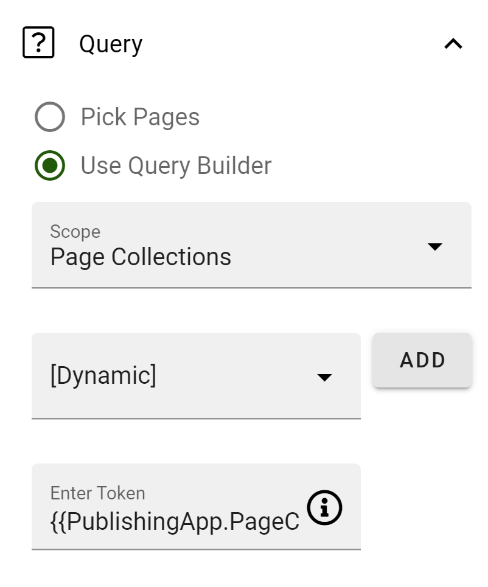

Learning Center¶
With Omnia, you can establish a learning center within your intranet.
Start off by watching this introductory video.
Here is a summary of the best practice recommendations:
Form a strategy for how to develop, provide, and maintain learning resources within the organization.
Organize your course catalogue in course subjects and course types.
Course subjects are familiar topics related to your business, like IT, leadership, products, and sales.
Course types can describe whether the course is internal, external or self-service.
Course Subjects and Course Types¶
Go to SharePoint admin center > Content services > Term store.
Create a new Term Set called Course Types. Add the following terms and change the sort order accordingly:
Internal course
Self-service
External course
Create a new Term Set called Course Subjects. Add the following terms:
IT
Leadership
Products
Sales
Create a new empty Term Set called Courses.
Go to Omnia Admin > Properties > Categories.
Create a new category called “Learning”.
Go to Omnia Admin > Properties > Enterprise Properties.
Create a new property for Course Subject. (Don’t forget to make it SharePoint Searchable).

Create a new property for Course Type.
Create a new property for Course.

Go to Omnia Admin > Properties > Queryable Properties.
Add Course Subject, Course Type and Course to Pages.
Page layouts¶
Go to Omnia Admin > Web Content Management > Page Layouts.
Create a new page layout for “Internal Course”. (It can be based on the news article layout and then customized according to needs.)

Page Rollup Query (Left-hand side):

Page Rollup Query (Right-hand side):
Token: {{PublishingApp.PageCollections[“course-dates”]}}
Learning Center Publishing App¶
Go to Omnia Admin > [Default Business Profile] > Publishing.
Create a new publishing app for the Learning Center.
Go to the newly created publishing app and create a page collection for the start page of the Learning Center.
Create a flat page collection for courses.

Create a flat page collection for course dates.